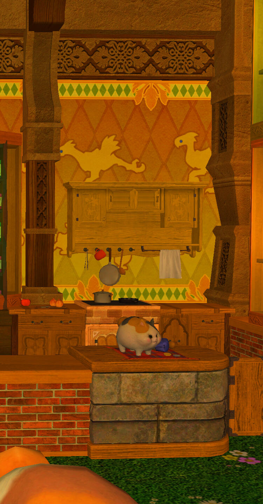

At our whimsical little haven, we've woven a purrfectly charming experience for adventurers and cat lovers alike. Step into a world of wonder, where chubby little felines playfully prance and bright-eyed kittens steal your heart with their irresistible charm.
Indulge in a delightful array of "Meowlicious Sips" and "Sugary Whisker Treats," lovingly prepared by our passionate cafe team. From the cozy comfort of our "Kitty Cream Delight" to the soul-soothing goodness of "Whiskerlicious Masala Meow-latte," each sip is a sip of pure happiness.
We've created a kawaii wonderland for you to relax and unwind, surrounded by fluffy cuteness and loving paws. With each visit, you become a part of our Fat Cat family, and your heart will be forever entwined with our furry companions.